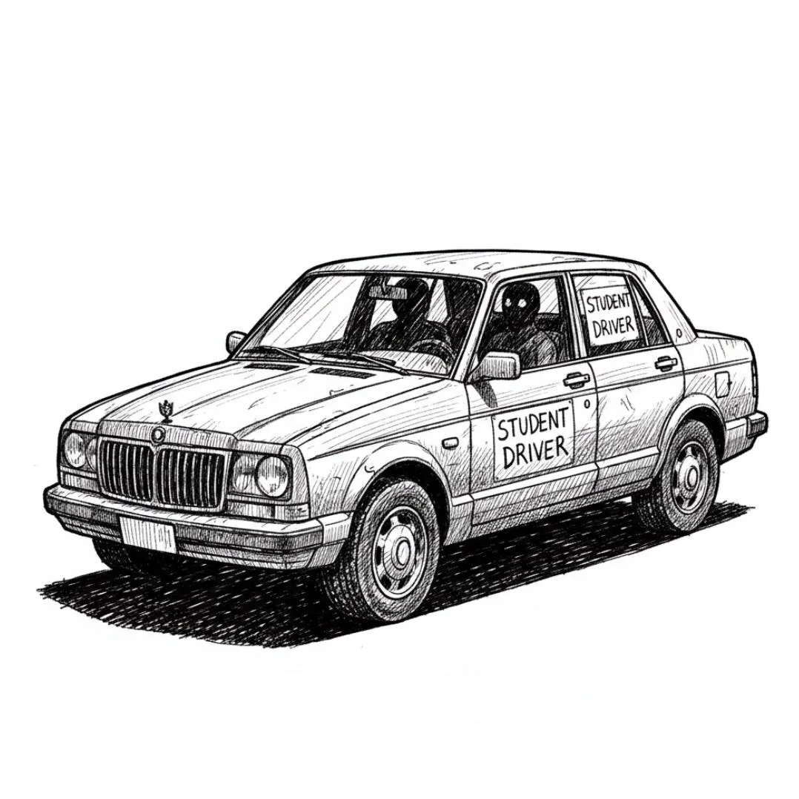

로건 브릭스는 토요타 차량이 덜컹거리며 앞으로 튀어 나가자 보조석 운전대를 꽉 잡았다. 조수석 시트에 영구적으로 남은 커피 얼룩은 그의 마스코트 같은 존재가 되어 있었다. 그날 하루가 얼마나 엉망인지에 따라 다르게 보이는 갈색 로르샤흐 테스트 같은 것이었다. 오늘따라 그 얼룩은 가운뎃손가락처럼 보였다.
[Logan Briggs gripped the instructor’s wheel as the Toyota lurched forward. The permanent coffee stain on the passenger seat had become something of a mascot, a brown Rorschach test that looked different depending on how badly his day was going. Today it resembled a middle finger.]
“클러치에서 발 좀 떼, 멜라니. 젠장, 무슨 클러치한테 빚 독촉이라도 하는 사람처럼 밟고 있잖아.”
[”Ease up on the clutch, Melanie. Jesus Christ, you’re riding it like it owes you money.”]
열아홉 살에, 만성적인 불안감에 시달리고, 공간 감각은 술 취한 아기 수준인 그 소녀는 미친 듯이 고개를 끄덕였다. 운전대를 쥔 그녀의 손마디가 하얗게 질렸다.
[The girl—nineteen, perpetually anxious, with the spatial awareness of a drunk toddler, nodded frantically. Her knuckles whitened around the wheel.]
“죄송해요, 브릭스 선생님.”
[”Sorry, Mr. Briggs.”]
“나한테 사과하지 마. 저 망할 기어박스한테나 사과하라고.”
[”Don’t apologize to me. Apologize to the fucking gearbox.”]
이 일을 한 지도 23년째였다. 23년간 죽을 고비를 넘기고, 좌우도 구분 못 하는 십 대들을 가르치고, 목숨이 달려 있어도 평행 주차 하나 못 하는 귀한 자식들이 운전에 타고났다고 우겨대는 부모들을 상대해왔다. 로건은 그들에게 자주 상기시켰다. 목숨이 진짜로 달려 있다고, 씨발.
[Twenty-three years he’d been doing this job. Twenty-three years of near-death experiences, of teenagers who couldn’t tell their left from their right, of parents who insisted their precious offspring were naturals behind the wheel when they couldn’t parallel park if their lives depended on it. Which, Logan frequently reminded them, they fucking did.]
“자, 교차로 나온다. 백미러 확인하고.”
[”Okay, junction coming up. Check your mirrors.”]
멜라니의 고개가 내이(內耳)에 문제가 생긴 부엉이처럼 휙 돌아갔다.
[Melanie’s head swiveled like an owl with inner ear problems.]
“깜빡이.”
[”Signal.”]
그녀는 와이퍼를 작동시켰다.
[She hit the windscreen wipers.]
“아, 씨발 진짜—”
[”For fuck’s sake—”]
검은색 레인지로버 한 대가 아무런 예고도 없이 그들 앞으로 끼어들었고, 범퍼를 스칠 듯이 지나갔다. 로건은 보조 브레이크를 힘껏 밟았고, 두 사람은 안전벨트에 몸이 쏠리며 앞으로 튕겨 나갔다. 그는 운전대 중앙을 주먹으로 내리쳤고, 토요타의 경적이 요란하게 울렸다.
[The black Range Rover cut across them without warning, missing their bumper by inches. Logan slammed his foot on the dual brake, throwing them both forward against their seatbelts. The Toyota’s horn blared, his fist on the center of the wheel.]
“이게 대체 무슨 좆같은 경우야?” 그는 열린 창문 밖으로 고함을 질렀다. “운전 똑바로 배워, 이 좆이나 까는 개씹같은 년아!”
[”WHAT THE ACTUAL FUCK?” he roared through the open window. “LEARN TO DRIVE, YOU COCK-JUGGLING THUNDERCUNT!”]
레인지로버가 끼익 소리를 내며 급정거했다.
[The Range Rover screeched to a halt.]
멜라니가 낑낑거렸다. “브릭스 선생님, 제 생각엔—”
[Melanie whimpered. “Mr. Briggs, I don’t think—”]
“운전 제1원칙이다, 멜라니. 좆같은 놈들이 좆같이 굴게 내버려 두지 마라.”
[”Rule number one of driving, Melanie. Don’t let cunts get away with being cunts.”]
레인지로버에서 내린 남자는 재미 삼아 소형차로 벤치 프레스를 할 것처럼 보였다. 삭발한 머리에, 목은 로건의 허벅지보다 굵었고, 턱선까지 문신이 기어 올라와 있었다. 그는 디자이너 선글라스로 눈을 가린 채 그들을 향해 성큼성큼 걸어왔다.
[The man who emerged from the Range Rover looked like he bench-pressed small cars for fun. Shaved head, neck thicker than Logan’s thigh, tattoos crawling up to his jawline. He stalked toward them, designer sunglasses hiding his eyes.]
“나한테 한 소리냐, 늙은이?”
[”You talking to me, old man?”]
로건은 토요타에서 내렸다. 175cm 남짓한 키에, 뱃살은 벨트 위로 축 늘어져 있었다. 23년간 수업 사이에 패스트푸드로 점심을 때운 세월은 그에게 친절하지 않았다.
[Logan stepped out of the Toyota, all five-foot-nine of him, stomach hanging over his belt. Twenty-three years of fast food lunches between lessons had not been kind.]
“방금 초보 운전자 앞으로 끼어든, 뇌가 없는 멍청한 새끼한테 말하고 있는데. 너 때문에 사람 죽을 뻔했어.”
[”I’m talking to whatever braindead fuckwit just cut across a learner driver. You could’ve killed someone.”]
남자가 미소를 지었다. 좋은 미소는 아니었다. 상어가 웃을 수 있다면 지을 법한 그런 미소였다.
[The man smiled. It wasn’t a nice smile. It was the kind of smile a shark might give if sharks could smile.]
“내가 누군지 알아?”
[”Do you know who I am?”]
“동네 바보 대회 우승자? 축하한다.”
[”The winner of the village idiot competition? Congratulations.”]
남자는 선글라스를 벗었다. 그의 왼쪽 눈가가 파르르 떨렸다. “난 대니 크레이다.”
[The man removed his sunglasses. His left eye twitched. “I’m Danny Kray.”]
로건에게는 아무 의미 없는 이름이었지만, 멜라니가 숨을 헉 들이마시는 것을 보니 뭔가 있는 이름인 듯했다.
[The name meant nothing to Logan, but the way Melanie gasped suggested it should.]
“글쎄, 대니 크레이, 네 운전 실력은 우리 할머니 같군. 돌아가신 지 15년 됐지만 말이야.”
[”Well, Danny Kray, you drive like my grandmother, and she’s been dead fifteen years.”]
대니가 더 가까이 다가섰다. “내 삼촌이 빅터 크레이다.”
[Danny stepped closer. “My uncle is Victor Kray.”]
아. 그 이름은 로건도 알았다. 도시의 모든 사람이 빅터 크레이를 알았다. 신문에서는 그를 ‘연줄 의혹이 있는 사업가’라고 불렀다. 경찰은 그를 악몽이라 불렀다. 그에게 밉보인 사람들은 그를 무어라 부를 겨를도 없이 사라졌다.
[Ah. That name Logan did know. Everyone in the city knew Victor Kray. The papers called him a “businessman with alleged connections.” The police called him a nightmare. People who crossed him weren’t around to call him anything.]
“그럼 네 삼촌한테 운전이나 좀 똑바로 가르치라고 전해, 씨발.”
[”Tell your uncle he should’ve taught you how to fucking drive, then.”]
나중에 로건은 더 현명한 말을 할 수도 있었을 거라고 회상했다. 훨씬, 훨씬 더 현명한 말들을.
[Later, Logan would reflect that there were smarter things he could have said. Many, many smarter things.]
대니의 얼굴이 어두워졌다. “오늘 실수한 거야, 친구. 아주 큰 실수를.”
[Danny’s face darkened. “You’ve made a mistake today, mate. A big one.”]
“네 어머니가 널 삼키지 않고 낳은 실수만큼은 아닐걸.”
[”Not as big as the one your mother made not swallowing you.”]
대니의 주먹이 그의 턱에 꽂히는 순간, 로건은 완벽한 깨달음의 순간을 맞았다. 자신은 이런 짓거리를 하기엔 너무 늙었고, 망가진 이를 고치기엔 돈이 너무 없으며, 입을 닥치고 있기엔 너무 고집이 셌다는 것을.
[As Danny’s fist connected with his jaw, Logan had a moment of perfect clarity: he was too old for this shit, too broke to fix his teeth, and too stubborn to have kept his mouth shut.]
보도블록에 쓰러지기 직전 마지막으로 본 것은 운전석에 그대로 앉아, 휴대폰으로 모든 것을 촬영하고 있는 멜라니의 모습이었다.
[The last thing he saw before hitting the pavement was Melanie, still in the driver’s seat, filming everything on her phone.]
마흔일곱 번째 운전 교습, 로건 브릭스는 이제 온갖 그릇된 이유로 인터넷에서 유명세를 탈 참이었다.
[Driving lesson number forty-seven, and Logan Briggs was about to go viral for all the wrong reasons.]
세상이 다시 초점을 찾았고, 손바닥에 닿는 아스팔트의 거친 감촉이 느껴졌다. 턱이 개자식처럼 욱신거렸지만, 더 세게 욱신거리는 것이 있었으니, 바로 자존심이었다. 23년간 같잖은 놈들을 상대해왔지만, 단 한 번도 물러선 적이 없었다. 이제 와서 시작할 생각은 없었다.
[The world swam back into focus, tarmac rough against Logan’s palms. His jaw throbbed like a bastard, but something else throbbed harder, his pride. Twenty-three years of dealing with entitled pricks, and not once had he backed down. He wasn’t about to start now.]
“고작 이게 다냐?” 로건은 대니의 새하얀 운동화 위로 피를 뱉었다. “일흔 살 먹은 우리 엄마가 너보단 세게 치겠다. 관절염까지 있으신데 말이야.”
[”Is that all you’ve got?” Logan spat blood onto Danny’s pristine white trainers. “My seventy-year-old mother hits harder, and she’s got arthritis.”]
대니의 얼굴이 일그러졌다. “좋은 말 할 때 그냥 누워 있어.”
[Danny’s face contorted. “Stay down if you know what’s good for you.”]
로건은 약간 비틀거리며 몸을 일으켰다. “운전 강사에 대해 재밌는 게 하나 있지.” 그는 어깨를 돌리며 말했다.
[Logan hauled himself up, swaying slightly. “Funny thing about driving instructors,” he said, rolling his shoulders.]
대니가 반응하기도 전에, 로건의 오른손이 뻗어 나갔다. 얼굴이 아니라, 목을 향해서. 젊은 시절 기도(用心棒)로 일할 때 쓰던 낡은 기술이었다. 그의 손가락이 턱 바로 아래의 급소를 찾아냈고, 그는 힘껏 움켜쥐었다.
[Before Danny could react, Logan’s right hand shot out, not for Danny’s face, but for his throat. An old bouncer’s trick from his younger days. His fingers found the pressure point just below the jaw, and he squeezed.]
대니의 눈이 튀어나올 듯 커졌다. 그는 로건의 손목을 할퀴었지만, 나이 든 남자가 자세를 장악하고 있었다.
[Danny’s eyes bulged. He clawed at Logan’s wrist, but the older man had the leverage.]
“운전 강사에 대한 또 다른 사실이 있지.” 목소리는 잠겨 있었지만, 로건은 대화하듯 말을 이었다. “온종일 그 브레이크 페달을 밟고 있어서 다리 힘이 아주 좆나게 세거든.”
[”Another thing about driving instructors,” Logan continued conversationally, though his voice was strained. “We’ve got fucking strong legs from riding that brake pedal all day.”]
그의 무릎이 대니의 다리 사이를 강하게 치고 올라갔다. 젊은 남자의 목구멍에서 나온 소리는 휘파람과 흐느낌 그 중간 어디쯤이었다.
[His knee came up hard between Danny’s legs. The sound that emerged from the younger man’s throat was somewhere between a whistle and a sob.]
로건이 그를 놓아주자, 대니는 싸구려 가구처럼 접히며 쓰러졌다. 그는 두 손으로 거기를 감싸 쥔 채, 상처 입은 작은 짐승 같은 소리를 냈다.
[Logan released him, and Danny folded like cheap furniture, cupping himself and making small, wounded animal noises.]
“브릭스 선생님!” 멜라니의 목소리에는 공포와 경외감이 반쯤 섞여 있었다. “저 사람 삼촌이—”
[”Mr. Briggs!” Melanie’s voice was half-terrified, half-awed. “His uncle is—”]
“삼촌이 누군지 들었어.” 로건은 구겨진 폴로 셔츠를 바로잡았다. “하지만 지금, 그 삼촌이 여기 있는 건 아니잖아, 안 그래?”
[”I heard who his uncle is.” Logan straightened his rumpled polo shirt. “But right now, his uncle isn’t here, is he?”]
그는 신음하는 남자 옆에 쪼그려 앉아, 멜라니의 휴대폰에 녹음될 만큼만 목소리를 높여 말했다. “잘 들어, 대니 꼬마야. 네 자동차 번호판도 찍혔고, 이 영상에 네 얼굴도 다 나왔어. 넌 내 수강생을 위험에 빠뜨렸어. 그건 업무 중인 운전 강사에 대한 폭행이야. 형사 범죄라고.”
[He crouched beside the groaning man, speaking just loud enough for Melanie’s phone to pick up. “Listen carefully, Danny boy. I’ve got your license plate, and your face is all over this video. You endangered my student. That’s assault on a driving instructor in the course of his duties. That’s a criminal offense.”]
로건이 알기로는 그런 죄는 없었지만, 그럴듯하게 들렸다.
[It wasn’t, as far as Logan knew, but it sounded good.]
“그러니 이렇게 하자고. 내 수강생을 놀라게 한 것에 대해 사과해. 그리고 그 비싸기만 한 보상용 똥차에 올라타서 꺼져버려. 만약 또다시 그따위로 운전하는 걸 보게 되면, 이 영상은 경찰서, 차량면허국, 그리고—” 그는 말을 강조하기 위해 잠시 멈췄다. “—네 삼촌한테 갈 거다.”
[”So here’s what’s going to happen. You’re going to apologize to my student for scaring her. Then you’re going to get in your overpriced compensation wagon and fuck off. And if I ever see you driving like that again, this video goes to the police, the DVLA, and—” he paused for effect, “—your uncle.”]
대니의 고개가 홱 들렸다. “우리 삼촌이라고?”
[Danny’s head snapped up. “My uncle?”]
“그래. 내 생각에 빅터 크레이는 자기 조카가 소셜 미디어에 쫙 깔리는 걸 원치 않을걸. 운전은 좆도 못하는 데다 중년의 운전 강사한테 쳐맞고 뻗어버린 완전 등신 같은 모습으로 말이야. 가문 평판에 안 좋잖아, 안 그래?”
[”Yeah. Because I’m guessing Victor Kray doesn’t want his nephew all over social media looking like a complete bell-end who can’t drive for shit and gets dropped by a middle-aged driving instructor. Bad for the family reputation, innit?”]
로건은 빅터 크레이에게 연락할 생각이 전혀 없었다. 자살하고 싶은 마음은 없었으니까. 하지만 대니가 그걸 알 필요는 없었다.
[Logan had no intention of contacting Victor Kray, he wasn’t suicidal, but Danny didn’t need to know that.]
“넌 뒤졌어.” 대니가 쌕쌕거리며 말했다. “네가 무슨 짓을 했는지 모를 거야.”
[”You’re dead,” Danny wheezed. “You don’t know what you’ve done.”]
“난 내가 무슨 짓을 했는지 정확히 알아. 너한테 도로 안전 교육을 해준 거지.” 로건이 무릎에서 우두둑 소리를 내며 일어섰다. “이제 내 수강생한테 사과해.”
[”I know exactly what I’ve done. I’ve taught you a lesson in road safety.” Logan stood up, knees cracking. “Now apologize to my student.”]
대니는 굴욕감에 얼굴이 벌게진 채 간신히 일어섰다. 작은 구경 인파가 모여들었고, 몇몇은 휴대폰을 꺼내 들고 있었다. 상황은 보복 운전에서 공개적인 구경거리로 격상되어 있었다.
[Danny struggled to his feet, face flushed with humiliation. A small crowd had gathered, several with phones out. The situation had escalated from road rage to public spectacle.]
“죄송합니다.” 그는 멜라니가 있는 쪽을 향해 중얼거렸다.
[”Sorry,” he muttered in Melanie’s general direction.]
“더 크게.” 로건이 쏘아붙였다. “진심을 담아서.”
[”Louder,” Logan insisted. “Like you mean it.”]
“끼어들어서 죄송합니다.” 대니가 이를 악물고 말했다.
[”I’m sorry for cutting you off,” Danny said through gritted teeth.]
로건이 고개를 끄덕였다. “착하네. 이제 꺼져.”
[Logan nodded. “Good lad. Now fuck off.”]
대니는 절뚝거리며 자신의 레인지로버로 돌아갔다. 그는 어깨너머로 마지막 악의에 찬 시선을 던졌다. “이걸로 끝난 거 아니야.”
[Danny limped back to his Range Rover, throwing one last venomous look over his shoulder. “This isn’t over.”]
“너처럼 드라마 찍는 놈들은 절대 끝나는 법이 없지.” 로건이 그의 등 뒤에 대고 소리쳤다.
[”It never is with you dramatic types,” Logan called after him.]
레인지로버가 끼익 소리를 내며 사라지자, 로건은 토요타 조수석으로 미끄러져 들어갔다. 아드레날린이 빠져나가자 욱신거리는 턱의 고통이 온전히 느껴졌다.
[As the Range Rover screeched away, Logan slid back into the passenger seat of the Toyota, adrenaline ebbing to reveal the full extent of his throbbing jaw.]
멜라니가 눈을 동그랗게 뜨고 그를 쳐다봤다. “방금 그건... 그건...”
[Melanie stared at him, wide-eyed. “That was... that was...”]
“그건,” 로건이 부어오르는 얼굴을 조심스럽게 만지며 말했다. “마흔일곱 번째 교습, 2부: 보복 운전 사고 대처법이었어.”
[”That,” Logan said, gingerly touching his swelling face, “was lesson forty-seven, part two: how to handle road rage incidents.”]
“얼굴은 괜찮으세요?”
[”Is your face okay?”]
“이보다 더 심한 적도 있었어.” 그는 앞 도로를 가리켰다. “계속 운전해. 아직 20분 남았어.”
[”It’s seen worse.” He gestured to the road ahead. “Drive on. We’ve still got twenty minutes left.”]
“하지만... 하지만 빅터 크레이는요? 그가 선생님을 찾아오면 어떡해요?”
[”But... but what about Victor Kray? What if he comes after you?”]
로건은 한숨을 쉬었다. 쉰두 해의 세월이 갑자기 온몸으로 느껴졌다. “멜라니, 살다 보면 알게 되겠지만 세상에는 두 종류의 인간이 있어. 뭘 할 거라고 떠들기만 하는 놈들과, 그냥 행동으로 보여주는 놈들. 대니는 첫 번째 부류야. 그냥 입만 살았지.”
[Logan sighed, suddenly feeling every one of his fifty-two years. “Melanie, in this life, you’ll learn that there are two types of people: those who talk about what they’re going to do, and those who just do it. Danny’s the first type. All mouth.”]
그 자신도 완전히 확신하는 말은 아니었지만, 소녀는 이미 충분히 겁에 질려 있었다.
[He wasn’t entirely convinced of this, but the girl looked terrified enough already.]
“게다가,” 그가 덧붙였다. “다음 주에 네 시험이 있잖아. 웬 건방진 깡패 조카 놈 때문에 내 합격률을 망칠 순 없지. 나도 지켜야 할 평판이란 게 있다고.”
[”Besides,” he added, “your test is next week. I’m not letting some jumped-up gangster’s nephew mess with my pass rate. I’ve got a reputation to maintain.”]
멜라니가 조심스럽게 차를 출발시켰을 때, 로건의 휴대폰이 울렸다. 전 부인에게서 온 문자였다: 월세 또 밀렸어. 처리해.
[As Melanie cautiously pulled away from the curb, Logan’s phone buzzed. A text from his ex-wife: Rent’s late again. Sort it.]
그는 잠시 눈을 감았다. 문제는 하나씩 해결하자.
[He closed his eyes briefly. One problem at a time.]
“백미러, 방향지시등, 조작.” 그는 멜라니에게 자동적으로 상기시켰다. “그리고 제발, 레인지로버는 좀 조심하고.”
[”Mirror, signal, maneuver,” he reminded Melanie automatically. “And for Christ’s sake, watch out for Range Rovers.”]